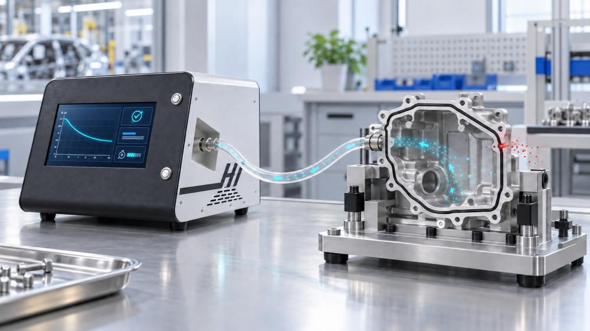
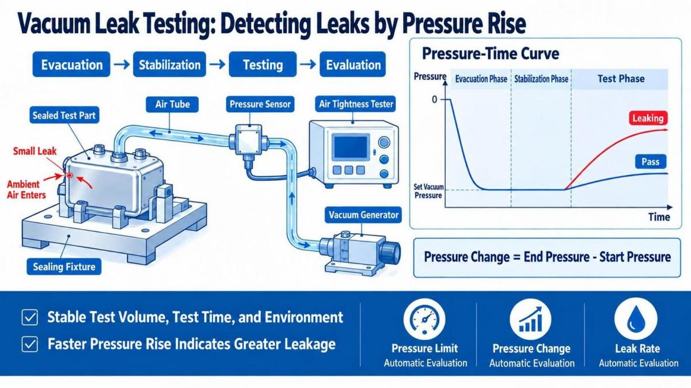
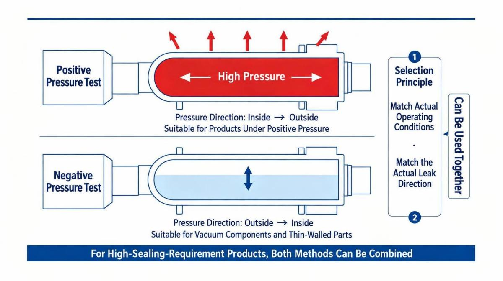

جهاز اختبار إحكام الهواء هل يمكنه أيضًا إجراء اختبار تسرب الفراغ؟ مبدأ وتطبيق اختبار الضغط السلبي بالفراغ
عند الحديث عن جهاز اختبار إحكام الهواء، يعتقد الكثيرون أولًا أنه يُستخدم لإدخال الهواء المضغوط إلى داخل المنتج، ثم تحديد ما إذا كان المنتج يعاني من تسرب من خلال مراقبة تغير الضغط. في الواقع، بالإضافة إلى طريقة الاختبار بالضغط الموجب الشائعة، يمكن لجهاز اختبار إحكام الهواء أيضًا استخدام طريقة التفريغ بالضغط السلبي لإجراء اختبار تسرب الفراغ للمنتج.
بالنسبة للمنتجات التي لا تناسبها ضغوط الاختبار الموجبة أو التي تعمل فعليًا في ظروف ضغط سلبي، فإن الاختبار بالضغط السلبي يكون غالبًا أكثر توافقًا مع ظروف الاستخدام الفعلية.
1. ما هو اختبار إحكام الهواء بالتفريغ والضغط السلبي؟
يشير اختبار التفريغ والضغط السلبي إلى استخدام جهاز اختبار إحكام الهواء لمولد فراغ أو مضخة فراغ من أجل سحب الهواء من داخل المنتج قيد الاختبار أو من حجرة الاختبار المحكمة، حتى يصل الضغط إلى قيمة الضغط السلبي المحددة. بعد ذلك، يتم إغلاق دائرة الاختبار ومراقبة ما إذا كان الضغط يرتفع مرة أخرى خلال الفترة الزمنية المحددة، ومن ثم تحديد ما إذا كان المنتج يعاني من تسرب استنادًا إلى تغير الضغط.
إذا كان المنتج محكم الإغلاق بشكل جيد، فيجب أن تظل درجة الفراغ في دائرة الاختبار مستقرة نسبيًا أثناء مرحلة الاختبار؛ أما إذا كان المنتج يحتوي على فتحة تسرب، فسيدخل الهواء الخارجي إلى داخل المنتج عبر نقطة التسرب، مما يؤدي إلى انخفاض الضغط السلبي تدريجيًا وارتفاع قيمة الضغط مرة أخرى. وعندما يتجاوز مقدار تغير الضغط الحد المحدد، يقوم الجهاز بتحديد المنتج على أنه غير مؤهل.

2. المبدأ الأساسي لاختبار تسرب الفراغ باستخدام جهاز اختبار إحكام الهواء
يعتمد اختبار الضغط السلبي بشكل أساسي على تغير الضغط داخل المساحة المغلقة لتحديد نتيجة الاختبار. بعد بدء الاختبار، يقوم الجهاز أولًا بسحب الهواء من داخل المنتج حتى يصل إلى الضغط السلبي المحدد، ثم يمر بمراحل الاستقرار والاختبار وغيرها، ويجمع بيانات تغير الضغط داخل المنتج.
يمكن عادةً استخدام المعادلة التالية: "مقدار تغير الضغط = ضغط نهاية الاختبار - ضغط بداية الاختبار"
عندما يكون حجم الاختبار ووقت الاختبار والظروف البيئية مستقرة نسبيًا، فإن سرعة ارتفاع الضغط مرة أخرى تشير إلى درجة أكبر من التسرب في المنتج. ويمكن لجهاز اختبار إحكام الهواء، وفقًا لـالحد الأعلى للضغط أو مقدار تغير الضغط أو معيار معدل التسرب المحدد مسبقًا، إصدار نتيجة مؤهل أو غير مؤهل تلقائيًا.
كما يمكن لبعض الأجهزة عالية الدقة الجمع بين حجم الاختبار للمنتج ووقت الاختبار وتغير الضغط، واستخدام الخوارزميات لحساب كمية التسرب المقابلة، مما يجعل نتائج الاختبار أكثر وضوحًا وسهولة في التقييم.

3. ما المنتجات المناسبة لاختبار الضغط السلبي؟
يناسب اختبار التفريغ بالضغط السلبي العديد من المنتجات التي تتطلب مستوى معينًا من إحكام الهواء، مثل مكونات المكانس الكهربائية التي تعمل في ظروف سحب الهواء، حيث يمكن لاستخدام اختبار الضغط السلبي أن يحاكي ظروف الاستخدام الفعلية بشكل أفضل. كما أن بعض المنتجات تتطلب مستوى أعلى من إحكام الهواء وتحتاج إلى الاختبار بالضغط الموجب والضغط السلبي معًا، مثل مكونات محركات السيارات. في هذه الحالة، يتم اختبار مكونات المحرك باستخدام كل من الضغط الموجب والضغط السلبي.
 الشكل 3: مكونات المحرك التي تتطلب اختبار الضغط الموجب والضغط السلبي
الشكل 3: مكونات المحرك التي تتطلب اختبار الضغط الموجب والضغط السلبي
بالنسبة للأجزاء ذات الجدران الرقيقة والمنتجات سهلة التشوه أو قطع العمل التي لا تتحمل ضغطًا موجبًا مرتفعًا، يمكن أن يقلل استخدام اختبار الضغط السلبي من خطر تمدد المنتج أو تشوهه أو حتى تعرضه للتلف.
4. ما الأمور التي يجب الانتباه إليها عند إجراء اختبار الضغط السلبي؟
لا يعني اختبار تسرب الفراغ أن زيادة الضغط السلبي أو إطالة وقت الاختبار سيؤدي بالضرورة إلى نتائج أفضل. يجب تحديد معايير الاختبار بشكل شامل وفقًا لهيكل المنتج وحجمه الداخلي وخصائص المواد ومعيار التسرب المسموح به وإيقاع الإنتاج.
بالنسبة للمنتجات اللينة أو سهلة التشوه، قد يؤدي تشوه المنتج إلى تغير في الضغط، وبالتالي التأثير في نتائج الاختبار. وعادةً ما تتطلب هذه المنتجات تحسين هيكل الدعم والتثبيت في أداة الاختبار، وتحديد ضغط التفريغ ووقت الاستقرار المناسبين من خلال اختبار العينات.
5. كيف يتم اختيار الاختبار بالضغط الموجب أو الضغط السلبي؟
اختبار الضغط الموجب هو تطبيق الضغط من داخل المنتج إلى الخارج، وهو مناسب للمنتجات التي تتحمل ضغطًا داخليًا أثناء التشغيل الطبيعي؛ أما اختبار الضغط السلبي فيتم من خلال سحب الهواء من داخل المنتج لتكوين ضغط سلبي، مع التركيز بشكل أساسي على مراقبة ما إذا كان الهواء الخارجي يدخل إلى داخل المنتج، ولذلك فهو أكثر ملاءمة للمكونات التي تعمل في ظروف الفراغ، والأجزاء ذات الجدران الرقيقة، والمنتجات التي لا يُنصح بتعريضها لضغط موجب.
لا توجد أفضلية مطلقة بين الطريقتين، كما أنه ليس من الضروري اختيار طريقة واحدة فقط، إذ يمكن استخدام الطريقتين معًا. والمهم هو أن تكون طريقة الاختبار أقرب ما يمكن إلى اتجاه التسرب الفعلي وظروف تشغيل المنتج. وبالنسبة للمنتجات ذات الهياكل المعقدة أو متطلبات الاختبار العالية، يمكن إجراء اختبارات مقارنة باستخدام عينات مؤهلة وعينات متسربة وفتحات تسرب قياسية، ثم تحديد طريقة الاختبار المناسبة.

6. الخلاصة
لا يقتصر استخدام جهاز اختبار إحكام الهواء على اختبار التسرب بالضغط الموجب، بل يمكنه أيضًا إجراء اختبار تسرب الفراغ من خلال طريقة التفريغ بالضغط السلبي. ويكمن جوهر هذه الطريقة في إنشاء بيئة مستقرة من الضغط السلبي، ثم مراقبة ارتفاع الضغط أو تغير كمية التسرب خلال الفترة الزمنية المحددة.
في التطبيقات العملية، يجب تصميم معايير الاختبار وأداة التثبيت المحكمة وفقًا لهيكل المنتج وحجم الاختبار وقيمة التسرب المسموح بها وإيقاع الإنتاج. ولا يمكن الحصول على نتائج اختبار مستقرة وموثوقة وقابلة للتكرار إلا عندما تكون طريقة الاختبار ونطاق قياس الجهاز وهيكل أداة التثبيت متوافقة مع بعضها البعض.